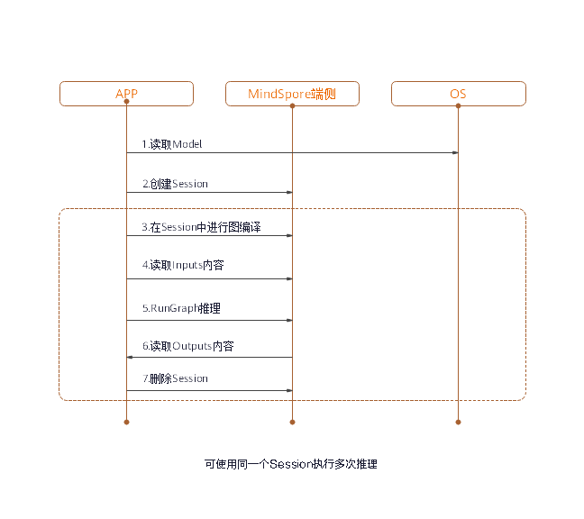

Runtime使用指南

概述
通过MindSpore Lite模型转换后，需在Runtime中完成模型的推理执行流程。
Runtime总体使用流程如下图所示：

包含的组件及功能如下所述：
Model：MindSpore Lite使用的模型，通过用户构图或直接加载网络，来实例化算子原型的列表。Lite Session：提供图编译的功能，并调用图执行器进行推理。Scheduler：算子异构调度器，根据异构调度策略，为每一个算子选择合适的kernel，构造kernel list，并切分子图。Executor：图执行器，执行kernel list，动态分配和释放Tensor。Operator：算子原型，包含算子的属性，以及shape、data type和format的推导方法。Kernel：算子库提供算子的具体实现，提供算子forward的能力。Tensor：MindSpore Lite使用的Tensor，提供了Tensor内存操作的功能和接口。
读取模型
在MindSpore Lite中，模型文件是从模型转换工具转换得到的.ms文件。进行模型推理时，需要从文件系统加载模型，并进行模型解析，这部分操作主要在Model中实现。Model持有权重数据、算子属性等模型数据。
模型通过Model类的静态Import方法从内存数据中创建。函数返回的Model实例是一个指针，通过new创建，不再需要时，需要用户通过delete释放。
创建会话
使用MindSpore Lite执行推理时，Session是推理的主入口，通过Session我们可以进行图编译、图执行。
创建上下文
上下文会保存会话所需的一些基本配置参数，用于指导图编译和图执行，其定义如下：
MindSpore Lite支持异构推理，推理时的主选后端由Context中的device_ctx_指定，默认为CPU。在进行图编译时，会根据主选后端进行算子选型调度。
MindSpore Lite内置一个进程共享的线程池，推理时通过thread_num_指定线程池的最大线程数，默认为2线程，推荐最多不超过4个线程，否则可能会影响性能。
MindSpore Lite支持动态内存分配和释放，如果没有指定allocator，推理时会生成一个默认的allocator，也可以通过Context方法在多个Context中共享内存分配器。
如果用户通过new创建Context，不再需要时，需要用户通过delete释放。一般在创建完Session后，Context即可释放。
创建会话
用上一步创建得到的Context，调用LiteSession的静态CreateSession方法来创建LiteSession。函数返回的LiteSession实例是一个指针，通过new创建，不再需要时，需要用户通过delete释放。
使用示例
下面示例代码演示了Context的创建，以及在两个LiteSession间共享内存池的功能：
auto context = new (std::nothrow) lite::Context;
if (context == nullptr) {
MS_LOG(ERROR) << "New context failed while running %s", modelName.c_str();
return RET_ERROR;
}
// The preferred backend is GPU, which means, if there is a GPU operator, it will run on the GPU first, otherwise it will run on the CPU.
context->device_ctx_.type = lite::DT_GPU;
// The medium core takes priority in thread and core binding methods. This parameter will work in the BindThread interface. For specific binding effect, see the "Run Graph" section.
context->cpu_bind_mode_ = MID_CPU;
// Configure the number of worker threads in the thread pool to 2, including the main thread.
context->thread_num_ = 2;
// Allocators can be shared across multiple Contexts.
auto *context2 = new Context(context->thread_num_, context->allocator, context->device_ctx_);
context2->cpu_bind_mode_ = context->cpu_bind_mode_;
// Use Context to create Session.
auto session1 = session::LiteSession::CreateSession(context);
// After the LiteSession is created, the Context can be released.
delete (context);
if (session1 == nullptr) {
MS_LOG(ERROR) << "CreateSession failed while running %s", modelName.c_str();
return RET_ERROR;
}
// session1 and session2 can share one memory pool.
auto session2 = session::LiteSession::CreateSession(context2);
delete (context2);
if (session == nullptr) {
MS_LOG(ERROR) << "CreateSession failed while running %s", modelName.c_str();
return RET_ERROR;
}
图编译
可变维度
使用MindSpore Lite进行推理时，在已完成会话创建与图编译之后，如果需要对输入的shape进行Resize，则可以通过对输入的tensor重新设置shape，然后调用session的Resize()接口。
使用示例
下面代码演示如何对MindSpore Lite的输入进行Resize：
// Assume we have created a LiteSession instance named session.
auto inputs = session->GetInputs();
std::vector<int> resize_shape = {1, 128, 128, 3};
// Assume the model has only one input,resize input shape to [1, 128, 128, 3]
inputs[0]->set_shape(resize_shape);
session->Resize(inputs);
图编译
在图执行前，需要调用LiteSession的CompileGraph接口进行图编译，进一步解析从文件中加载的Model实例，主要进行子图切分、算子选型调度。这部分会耗费较多时间，所以建议ListSession创建一次，编译一次，多次执行。
使用示例
下面代码演示如何进行图编译:
// Assume we have created a LiteSession instance named session and a Model instance named model before.
// The methods of creating model and session can refer to "Import Model" and "Create Session" two sections.
auto ret = session->CompileGraph(model);
if (ret != RET_OK) {
std::cerr << "CompileGraph failed" << std::endl;
// session and model need to be released by users manually.
delete (session);
delete (model);
return ret;
}
输入数据
获取输入Tensor
在图执行前，需要将输入数据拷贝到模型的输入Tensor。
MindSpore Lite提供两种方法来获取模型的输入Tensor。
使用
GetInputsByName方法，根据模型输入节点的名称来获取模型输入Tensor中连接到该节点的Tensor的vector。使用
GetInputs方法，直接获取所有的模型输入Tensor的vector。
数据拷贝
当获取到模型的输入，就需要向Tensor中填入数据。通过MSTensor的Size方法来获取Tensor应该填入的数据大小，通过data_type方法来获取Tensor的数据类型，通过MSTensor的MutableData方法来获取可写的指针。
使用示例
下面示例代码演示了从LiteSession中获取整图输入MSTensor，并且向其中灌入模型输入数据的过程：
// Assume we have created a LiteSession instance named session.
auto inputs = session->GetInputs();
// Assume that the model has only one input tensor.
auto in_tensor = inputs.front();
if (in_tensor == nullptr) {
std::cerr << "Input tensor is nullptr" << std::endl;
return -1;
}
// It is omitted that users have read the model input file and generated a section of memory buffer: input_buf, as well as the byte size of input_buf: data_size.
if (in_tensor->Size() != data_size) {
std::cerr << "Input data size is not suit for model input" << std::endl;
return -1;
}
auto *in_data = in_tensor->MutableData();
if (in_data == nullptr) {
std::cerr << "Data of in_tensor is nullptr" << std::endl;
return -1;
}
memcpy(in_data, input_buf, data_size);
// Users need to free input_buf.
// The elements in the inputs are managed by MindSpore Lite so that users do not need to free inputs.
需要注意的是：
MindSpore Lite的模型输入Tensor中的数据排布必须是NHWC。
模型的输入
input_buf是用户从磁盘读取的，当拷贝给模型输入Tensor以后，用户需要自行释放input_buf。GetInputs和GetInputsByName方法返回的vector不需要用户释放。
图执行
执行会话
MindSpore Lite会话在进行图编译以后，即可使用LiteSession的RunGraph进行模型推理。
绑核
MindSpore Lite内置线程池支持绑核、解绑操作，通过调用BindThread接口，可以将线程池中的工作线程绑定到指定CPU核，用于性能分析。绑核操作与创建LiteSession时用户指定的上下文有关，绑核操作会根据上下文中的绑核策略进行线程与CPU的亲和性设置。
需要注意的是，绑核是一个亲和性操作，不保证一定能绑定到指定的CPU核，会受到系统调度的影响。而且绑核后，需要在执行完代码后进行解绑操作，示例如下：
// Assume we have created a LiteSession instance named session.
session->BindThread(true);
auto ret = session->RunGraph();
if (ret != mindspore::lite::RET_OK) {
std::cerr << "RunGraph failed" << std::endl;
delete session;
return -1;
}
session->BindThread(false);
绑核参数有两种选择：大核优先和中核优先。
判定大核和中核的规则其实是根据CPU核的频率而不是根据CPU的架构，对于没有大中小核之分的CPU架构，在该规则下也可以区分大核和中核。
绑定大核优先是指线程池中的线程从频率最高的核开始绑定，第一个线程绑定在频率最高的核上，第二个线程绑定在频率第二高的核上，以此类推。
对于中核优先，中核的定义是根据经验来定义的，默认设定中核是第三和第四高频率的核，当绑定策略为中核优先时，会优先绑定到中核上，当中核不够用时，会往小核上进行绑定。
回调运行
Mindspore Lite可以在调用RunGraph时，传入两个KernelCallBack函数指针来回调推理模型，相比于一般的图执行，回调运行可以在运行过程中获取额外的信息，帮助开发者进行性能分析、Bug调试等。额外的信息包括：
当前运行的节点名称
推理当前节点前的输入输出Tensor
推理当前节点后的输入输出Tensor
使用示例
下面示例代码演示了使用LiteSession进行图编译，并定义了两个回调函数作为前置回调指针和后置回调指针，传入到RunGraph接口进行回调推理，并演示了一次图编译，多次图执行的使用场景：
// Assume we have created a LiteSession instance named session and a Model instance named model before.
// The methods of creating model and session can refer to "Import Model" and "Create Session" two sections.
auto ret = session->CompileGraph(model);
if (ret != RET_OK) {
std::cerr << "CompileGraph failed" << std::endl;
// session and model need to be released by users manually.
delete (session);
delete (model);
return ret;
}
// Copy input data into the input tensor. Users can refer to the "Input Data" section. We uses random data here.
auto inputs = session->GetInputs();
for (auto in_tensor : inputs) {
in_tensor = inputs.front();
if (in_tensor == nullptr) {
std::cerr << "Input tensor is nullptr" << std::endl;
return -1;
}
// When calling the MutableData method, if the data in MSTensor is not allocated, it will be malloced. After allocation, the data in MSTensor can be considered as random data.
(void) in_tensor->MutableData();
}
// Definition of callback function before forwarding operator.
auto before_call_back_ = [&](const std::vector<mindspore::tensor::MSTensor *> &before_inputs,
const std::vector<mindspore::tensor::MSTensor *> &before_outputs,
const session::CallBackParam &call_param) {
std::cout << "Before forwarding " << call_param.name_callback_param << std::endl;
return true;
};
// Definition of callback function after forwarding operator.
auto after_call_back_ = [&](const std::vector<mindspore::tensor::MSTensor *> &after_inputs,
const std::vector<mindspore::tensor::MSTensor *> &after_outputs,
const session::CallBackParam &call_param) {
std::cout << "After forwarding " << call_param.name_callback_param << std::endl;
return true;
};
// Call the callback function when performing the model inference process.
ret = session_->RunGraph(before_call_back_, after_call_back_);
if (ret != RET_OK) {
MS_LOG(ERROR) << "Run graph failed.";
return RET_ERROR;
}
// CompileGraph would cost much time, a better solution is calling CompileGraph only once and RunGraph much more times.
for (size_t i = 0; i < 10; i++) {
auto ret = session_->RunGraph();
if (ret != RET_OK) {
MS_LOG(ERROR) << "Run graph failed.";
return RET_ERROR;
}
}
// session and model needs to be released by users manually.
delete (session);
delete (model);
获取输出
获取输出Tensor
MindSpore Lite在执行完推理后，就可以获取模型的推理结果。
MindSpore Lite提供四种方法来获取模型的输出MSTensor。
使用
GetOutputsByNodeName方法，根据模型输出节点的名称来获取模型输出MSTensor中连接到该节点的Tensor的vector。使用
GetOutputMapByNode方法，直接获取所有的模型输出节点的名称和连接到该节点的模型输出MSTensor的一个map。使用
GetOutputByTensorName方法，根据模型输出Tensor的名称来获取对应的模型输出MSTensor。使用
GetOutputMapByTensor方法，直接获取所有的模型输出MSTensor的名称和MSTensor指针的一个map。
当获取到模型的输出Tensor，就需要向Tensor中填入数据。通过MSTensor的Size方法来获取Tensor应该填入的数据大小，通过data_type方法来获取MSTensor的数据类型，通过MSTensor的MutableData方法来获取可读写的内存指针。
使用示例
下面示例代码演示了使用GetOutputMapByNode接口获取输出MSTensor，并打印了每个输出MSTensor的前十个数据或所有数据：
// Assume we have created a LiteSession instance named session before.
auto output_map = session->GetOutputMapByNode();
// Assume that the model has only one output node.
auto out_node_iter = output_map.begin();
std::string name = out_node_iter->first;
// Assume that the unique output node has only one output tensor.
auto out_tensor = out_node_iter->second.front();
if (out_tensor == nullptr) {
std::cerr << "Output tensor is nullptr" << std::endl;
return -1;
}
// Assume that the data format of output data is float 32.
if (out_tensor->data_type() != mindspore::TypeId::kNumberTypeFloat32) {
std::cerr << "Output of lenet should in float32" << std::endl;
return -1;
}
auto *out_data = reinterpret_cast<float *>(out_tensor->MutableData());
if (out_data == nullptr) {
std::cerr << "Data of out_tensor is nullptr" << std::endl;
return -1;
}
// Print the first 10 float data or all output data of the output tensor.
std::cout << "Output data: ";
for (size_t i = 0; i < 10 && i < out_tensor->ElementsNum(); i++) {
std::cout << " " << out_data[i];
}
std::cout << std::endl;
// The elements in outputs do not need to be free by users, because outputs are managed by the MindSpore Lite.
需要注意的是，GetOutputsByNodeName、GetOutputMapByNode、GetOutputByTensorName和GetOutputMapByTensor方法返回的vector或map不需要用户释放。
下面示例代码演示了使用GetOutputsByNodeName接口获取输出MSTensor的方法：
// Assume we have created a LiteSession instance named session before.
// Assume that model has a output node named output_node_name_0.
auto output_vec = session->GetOutputsByNodeName("output_node_name_0");
// Assume that output node named output_node_name_0 has only one output tensor.
auto out_tensor = output_vec.front();
if (out_tensor == nullptr) {
std::cerr << "Output tensor is nullptr" << std::endl;
return -1;
}
下面示例代码演示了使用GetOutputMapByTensor接口获取输出MSTensor的方法：
// Assume we have created a LiteSession instance named session before.
auto output_map = session->GetOutputMapByTensor();
// Assume that output node named output_node_name_0 has only one output tensor.
auto out_tensor = output_vec.front();
if (out_tensor == nullptr) {
std::cerr << "Output tensor is nullptr" << std::endl;
return -1;
}
下面示例代码演示了使用GetOutputByTensorName接口获取输出MSTensor的方法：
// We can use GetOutputTensorNames method to get all name of output tensor of model which is in order.
auto tensor_names = this->GetOutputTensorNames();
// Assume we have created a LiteSession instance named session before.
// Use output tensor name returned by GetOutputTensorNames as key
for (auto tensor_name : tensor_names) {
auto out_tensor = this->GetOutputByTensorName(tensor_name);
if (out_tensor == nullptr) {
std::cerr << "Output tensor is nullptr" << std::endl;
return -1;
}
}
获取版本号
MindSpore Lite提供了Version方法可以获取版本号，包含在include/version.h头文件中，调用该方法可以得到版本号字符串。
使用示例
下面代码演示如何获取MindSpore Lite的版本号：
#include "include/version.h"
std::string version = mindspore::lite::Version();